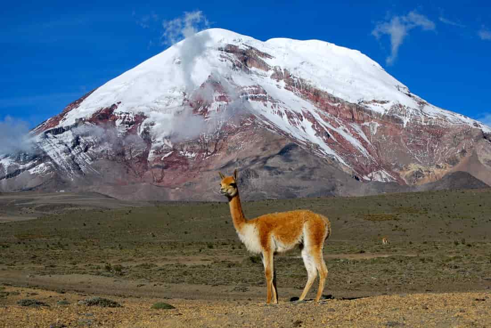
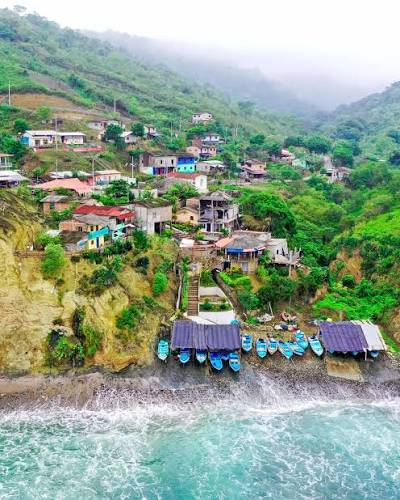
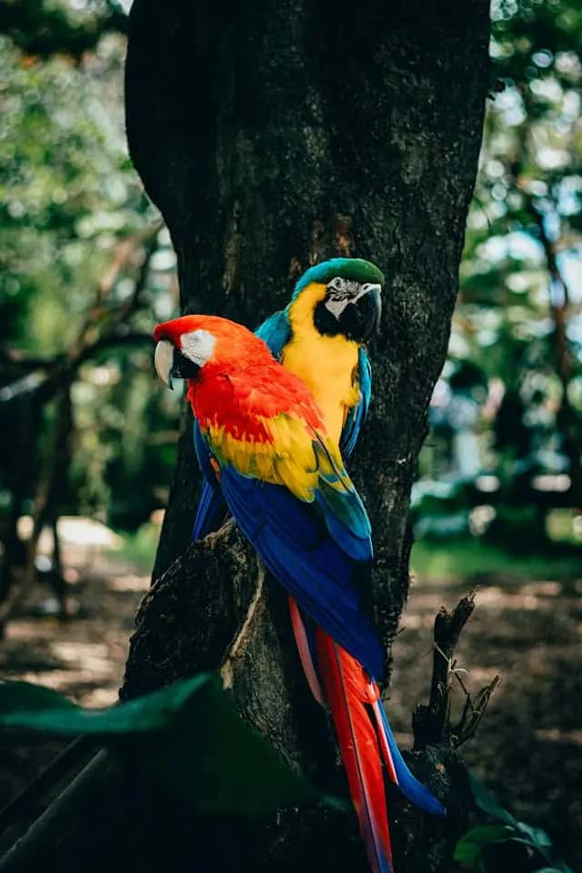
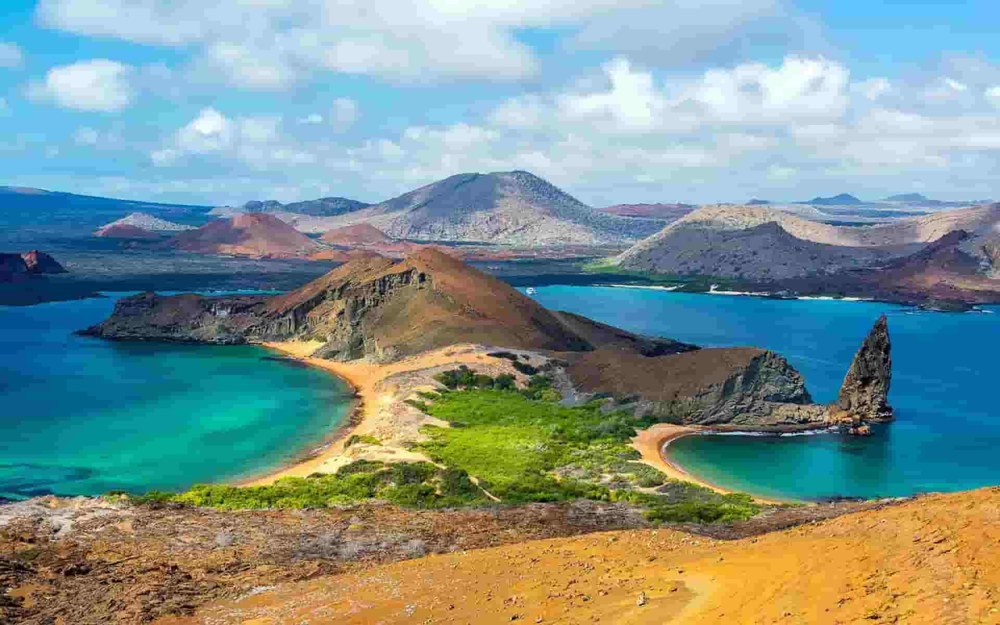

Ecuador
Welcome to my website about Traditional Ecuadorian Food! Ecuador is a beautiful country known for its incredible cultural diversity, breathtaking landscapes, and delicious traditional cuisine. Here, you will discover some of the most popular dishes from the four regions of Ecuador: the Coast, the Highlands, the Amazon Rainforest, and the Galápagos Islands. Each region offers unique flavors, fresh ingredients, and special cooking traditions that have been passed down through generations. You will also learn about the history of traditional Ecuadorian dishes, the ingredients used to prepare them, and the different cooking methods that make each meal special. On this website, you will also explore some of the best restaurants where you can experience authentic Ecuadorian food and discover the amazing variety of flavors that make our cuisine unique. From delicious seafood dishes on the Coast to traditional potato-based meals in the Highlands, Ecuadorian gastronomy offers something special for everyone. My goal is to share the richness of Ecuadorian cuisine and help visitors learn more about the traditions, culture, and culinary heritage of my country. I hope you enjoy exploring this website and discovering the wonderful food that makes Ecuador such a special place!
Regions of Ecuador
Ecuador is a beautiful country located in South America, famous for its incredible biodiversity, stunning landscapes, rich cultural heritage, and delicious traditional cuisine. Despite its relatively small size, Ecuador offers an amazing variety of natural environments, including beautiful beaches, majestic mountains, tropical rainforests, and unique islands. The country is divided into four main geographical regions: the Coast, the Highlands, the Amazon Rainforest, and the Galápagos Islands. Each region has its own traditions, customs, local ingredients, and cooking techniques that make Ecuadorian gastronomy special and diverse. The traditional food of Ecuador reflects the history, culture, and identity of its people. From fresh seafood and plantain-based dishes on the Coast to delicious soups, roasted meats, and potato specialties in the Highlands, every region offers something unique. The Amazon Rainforest is known for its ancestral cooking methods and natural ingredients, while the Galápagos Islands offer fresh seafood dishes inspired by island life. These culinary traditions have been passed down through generations, preserving the authentic flavors of Ecuador and making its cuisine an important part of the country's cultural identity.
Sierra

The Sierra region of Ecuador is known for its beautiful mountains, volcanoes, and wide variety of traditional dishes. Its cuisine uses ingredients such as potatoes, corn, pork, and Andean grains. Some of its most popular traditional foods include hornado (roasted pork), fritada (fried pork), locro de papa (potato soup), roasted guinea pig, and llapingachos (potato patties). Each province has its own recipes and traditions, making the Sierra a region full of unique flavors that reflect its culture and history.
Coast

The Costa region of Ecuador is famous for its beautiful beaches, warm climate, and delicious cuisine based mainly on seafood, fish, green plantains, and peanuts. Some of its most popular traditional dishes include encebollado (fish soup), ceviche, bolones de verde (green plantain balls), encocado de pescado (fish in coconut sauce), and tigrillo (mashed green plantains with eggs and cheese). Coastal food is known for its rich flavors, fresh ingredients, and traditional recipes that represent the cultural diversity of its provinces.
Amazon

The Amazon region of Ecuador is known for its incredible biodiversity and traditional cuisine, which is closely connected to nature and the customs of its Indigenous communities. Its dishes use ingredients such as cassava, plantains, river fish, and different products from the rainforest. Some of its most famous traditional foods include maito de pescado (fish wrapped in leaves), ayampaco, carachama fish soup, and roasted chontacuro larvae. Amazonian cuisine offers unique flavors and ancestral cooking techniques that are an important part of the region's cultural identity.
Galápagos

The Insular region, made up of the Galápagos Islands, has a cuisine influenced by the Pacific Ocean and the cultural diversity of its inhabitants. Its traditional dishes mainly use fresh fish, seafood, and agricultural products grown on the islands. Some of its most popular dishes include fish ceviche, grilled fish, encocado de pescado (fish in coconut sauce), and different seafood soups. The region's cuisine combines Ecuadorian traditions with local ingredients, offering a special culinary experience in one of the most famous destinations in the country.